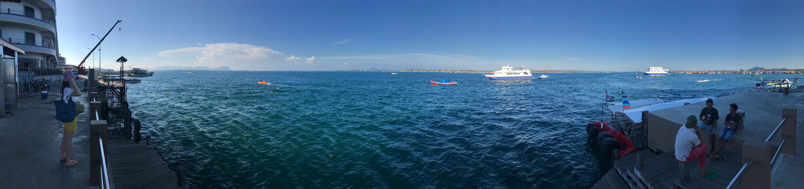
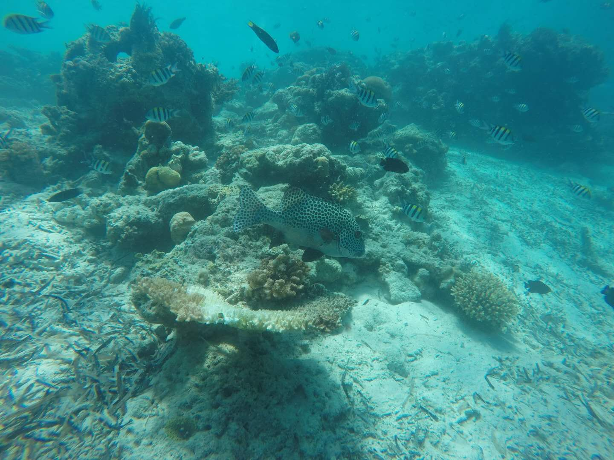
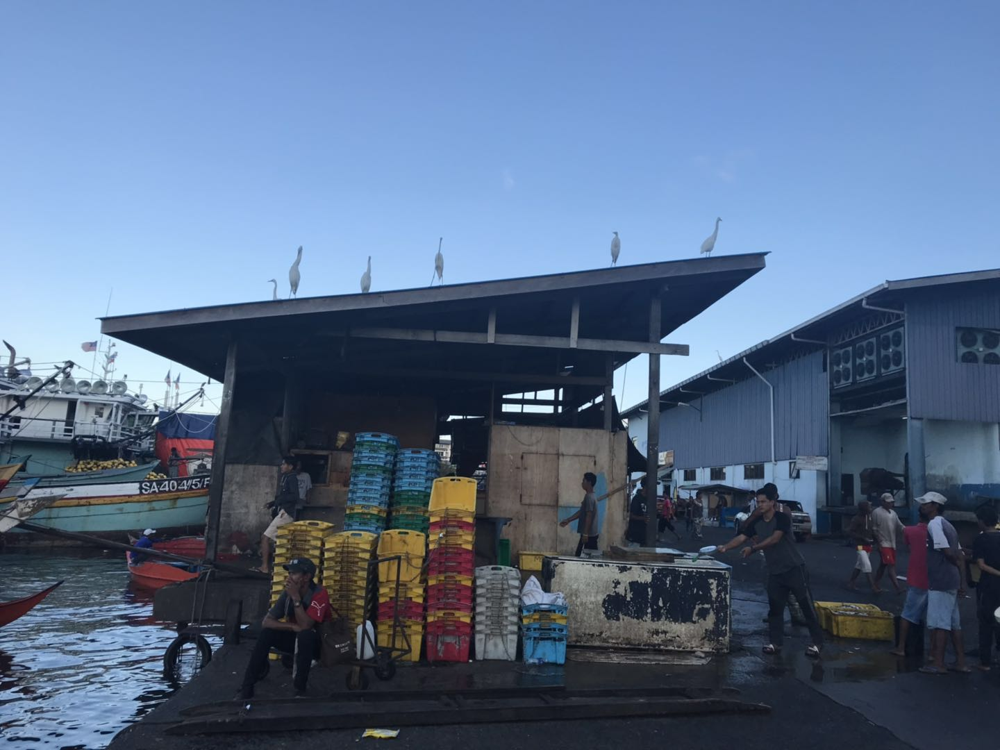
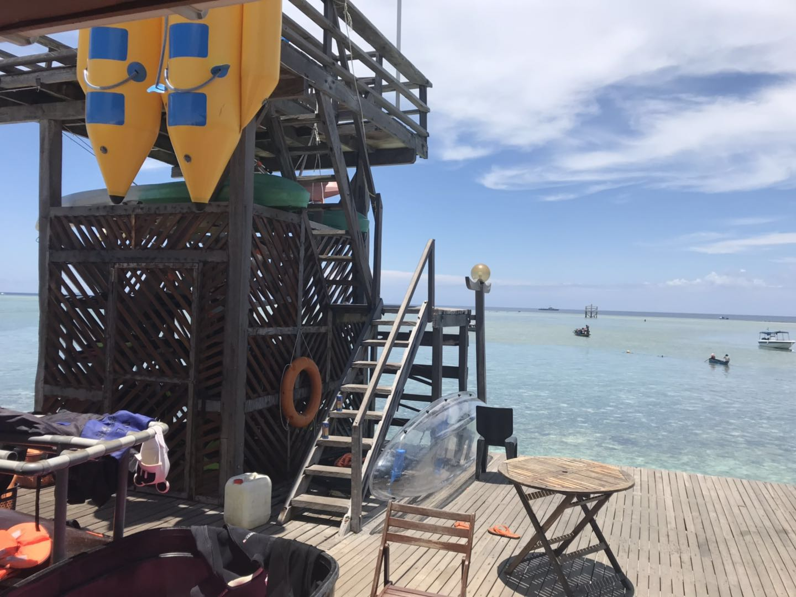

第一次出国，而且是自由行旅游，因此写一篇文章纪念下~
出行前看了很多网上的攻略，也无意再写一篇重复汇总的，只想分享下自己的旅游过程，供大家多一个了解的视觉。
仙本娜是马来西亚的沙巴洲的一个小镇，是闻名的潜水胜地，now Let’s go~~~
行程
行程总览
自由行，出发前自然要做好规划，最后的行程基本与一开始想的差不多，查考以下表格：
| 时间\日期 | 2019-04-05 | 2019-04-06 | 2019-04-07 | 2019-04-08 | 2019-04-09 | 2019-04-10 |
| 早餐 | 当地餐馆A特色咖喱面包（2马币） | 当地餐馆B特色荷叶饭（3马币） | 当地餐馆C特色咖喱面包 | 当地餐馆B特色蛋包饭（8马币） | 马步天堂自助餐 | |
| 早上 | 仙本娜镇上当地人住宅区、菜市场瞎转 | 敦沙海洋公园跳岛游 | 马达京岛+邦邦岛+汀巴汀巴岛跳岛跳岛游 | 海丰酒店边上看日出 坐船上马步岛 | 蹭度假村看日出（20马币一个人），马步岛浮潜（30马币一个人） | 坐船回仙本娜 giant超市买手信 |
| 午餐 | 海景餐馆海鲜餐（2人支付宝100元人民币搞掂） | 马步天堂自助餐 | 马步天堂自助餐 | 马币用光了，又回到当地餐馆B吃特色蛋包饭，当地餐馆A吃特色咖喱面包 | ||
| 下午 | 龙门客栈区域海边瞎转 | 马步岛绕岛一圈，游泳拍照 | 马步岛绕岛一圈，游泳拍照 （本来想去卡帕莱浮潜的，没有船） | 飞机回广州 马币用光了，只能吃面包 | ||
| 晚餐 | 天下客餐馆，加工2只龙虾（80马币） | 海景餐馆，加工1条石斑（15马币） | 天下客餐馆，加工1条当地鱼（20马币） 深潜+太阳晒伤后，头晕无胃口 | 买皮皮虾（着急了，3只50马币） | 4只螃蟹（壳很薄，肉很多）25马币，7只大鲍鱼20马币 | |
| 晚上 | 休息，早睡早起保留体力才能对的起第二天的行程 | 躺着看着漫天的星星，听着酒店当地员工此起彼伏的吉他歌唱声，惬意 | ||||
行程介绍
瞎转
day1，主要是在仙本娜镇上瞎转，熟悉下环境，调整下身心~~
仙本娜镇上的清真寺
海丰酒店对开的海面

敦沙海洋公园跳岛游
day2，参加了敦沙海洋公园跳岛一日游。
主题是拍照、浮潜、爬山（记得再累也要爬上去，景色太美了。记得穿运动鞋，山路难行。）、升降伞、探访巴瑶族小朋友（建议带些面包和水送（感觉这些才是正儿八经的必需品）给他们，糖果什么的就不要了吧，免得外包装随海扔）
为了有赠送的接机车和玩升降伞，我报了升级版的行程。现在回想起来，升级版的性价比不高，还不如自己找车，自己到当地再到潜店报名。一堆的潜店，根本不需要提前预订。而且我们还有day1，时间充裕。
景色
浮潜
看到仙本娜的海水，我才真正明白浮潜这两个字。一直以为要潜到深处才能看到成群的鱼和珊瑚，其实只要海水清澈，浮潜就是你一边游泳一边低头看，成群的鱼和珊瑚足够震撼。
潜水镜和呼吸管还是很有必要的，可以让你一直舒舒服服的浮着看鱼和珊瑚。
水母衣也很重要，防晒加防受伤。这里呼吁下，用水母衣防晒吧，防晒霜会杀死珊瑚虫的，实在不忍心。
还有防滑鞋和跟屁虫，安全第一呀。
自带手机+潜水套拍的照片。还是推荐买个潜水相机什么的，用手机+潜水套实在浪费了如此良辰美景，关键时刻还容易掉链子，毕竟欺山莫欺水，装备很重要。
爬到山顶
马达京岛+邦邦岛+汀巴汀巴岛跳岛跳岛游
day3，继续参加跳岛一日游。
其实行程很紧密，有些岛还不能上，只能在旁边浮潜，所以总的感觉下来，去多少个岛，去了什么岛，对你来说是没概念的，都是拍照加浮潜，都能震撼你的视觉和心灵。
我报名了升级版，参加了体验深潜（fun dive），教练把我当木偶带着潜到6米深处，还是值得的。

海丰酒店边上看日出
day4，上岛前有时间，去了海丰酒店边上的码头看日出，可惜云比较多

马步岛
没去到卡帕莱浮潜还是有点遗憾，不过在岛上闲逛也确实有度假的感觉
又给马步天堂卖广告了

岛上居民还是比较穷和落后的，环境脏乱差
旁边的度假村内外
马步天堂带着去的浮潜点
马步天堂旁边退潮后直接跳下去游泳拍的照片
总结体会
签证
不少攻略提到签证，各种详细介绍。我就不多说了，我从广州出发，去6天，直接选的是entri签证，自己去官网申请，申请完马上出结果，比其它什么途径都方便快捷。
入境、出境都是在哥打京那巴鲁。这里吐槽一下，按我自己的想法，其实在广州就是那样了，你要坐国际航班，那么坐飞机前肯定在你的必经之路上要你出境，飞机到达之后肯定也要在你的必经之路上要你入境吧。这不是我自不自觉的问题，而是流程规范上就应该这么控制。但是哥打京那巴鲁那里就不是，可能是因为小机场、可能是因为中国游客签证特殊的问题，它就特定加了个指示牌，要你绕道特意去办出入境，指示牌还不太清晰，所以这里你得留意了。
不少攻略也提到，签证、机票行程、住宿安排都要打印好，带足够的现金。这些就不多说了。
航班
我们选的是马来西亚亚航的航班，从广州出发到哥打京那巴鲁（注意，也就是亚庇）再到斗湖。出发时间是凌晨00：25-07：05，回程时间是17：40-23：20。选择这个航班有两个理由：
- 价格便宜，一个人来回1300人民币就行了。
- 时间充裕，出趟国不容易啊，留在那边的时间越多越好~
凌晨的飞机累是累了点，但也没想象中那么累，而且选这个航班其实人也挺多的，大家都那样啦。运气好的话，隔壁没人坐，等飞机起飞了你还可以直接一个人躺3座位。
有几点要注意的：
- 冷。不少攻略也提到，亚航的飞机很冷，确实，去的时候我穿了件长袖+薄羽绒，回来的时候还好，长袖+皮肤衣。
- 廉价航空。廉价航空的特性就是只包机票，其它什么都没有，没有飞机餐没有水。但我这次的体验，其实我平常坐飞机也就没打算要这些服务，所以体验上也没多差，一开始担心座位太挤不舒服什么的也没有。就是回程的时候，在哥打京那巴鲁，安检把水倒了之后不会有地方让你再装水，所以是没有水喝的。
- 行李额。不少攻略都提到行李额的问题，我们这次的体验就是，只有回程，也就只是检查了一个人只能两件行李，没检查行李超重或体积。当然也可能是与我们是晚上的航班有关系。建议还是按规定，超重或超大的就多买一个行李额托运吧。
- 价格。这里特别注意，必须提前订机票，我就是从一个人单程600多的机票一直犹豫到变成900多，最后某个晚上发现机票已经升到1100，然后硬着头皮赶紧买了。结果第二天，又降回到900多，据说这是航空公司的潜规则，当很多人都在看机票的时候就会升价，算是交学费了。。
马币
哥打京那巴鲁和斗胡机场都有atm能取现金，也比较方便，只有一点要注意，一次取完，不要分多次，不然每次都收12块的手续费。一般换1000马币差不多了，能用支付宝的地方尽量支付宝。
语言
一路走来，会说英文当然最好，某些地方某些人真的就只能用英文沟通。可以用google翻译救场。
但是英文差一点也真的没关系，不用太担心，很多人都会说中文。在仙本娜，由于中国游客多，当地人，特别是做生意的人（比如饭店、卖海鲜的）都基本会说几句中文，不然他们赚不了钱了吧。。另外由于中国人多，你可能会有一种错觉，感觉你还在国内，只不过去了外省乡村的一个小镇，镇上的人连国语也说不好而已。
电话卡
淘宝买一个流量卡就行
安全
当地人都很友善、热情，感觉不用太担心什么安全问题。跟当地人打交道，有时感觉比在国内还好，在国内经常要提防被坑。有时带着这种提防的心理跟当地人打交道，甚至有一种以小人之心度君子之腹的感觉。
用车
全程好像就只有斗湖机场和仙本娜之间来回要用车，大家都一致推荐grab。我们因为提前约好车了所以没用过。另外在当地25马币一个人也很容易找到车的。
出国了，可以用google地图啦
住宿
住宿本来应该没什么好说的，但是我要为自己的这次行程吐槽和推荐。
我前三天住在海丰精品酒店，中规中矩吧，主要是交通方便。但是有两点让我很不爽，要吐槽的：
- 说是什么新海丰、海丰精品，甚至我订房的时候也比海丰酒店贵。但是我去到那里的感觉就是这个海丰精品酒店就是山寨海丰酒店的吧。
- 最后一天我从马步岛回到仙本娜镇上，购物了半天然后找不到厕所，想就近回到这家酒店方便一下，结果居然不让我进里面的洗手间，这一点令我怀恨在心。后来在携程上看了些评论，居然还看到同样遭遇的。恨呀。。
后两天我是住在马步岛上的马步天堂萧叔叔那里，这个是想推荐的：
- 与携程上的评论内容相比，显然他们家是越来越有钱了，扩建了吧，相比其它地方他们提供了淡水（虽然早上下午各一小时），有空调（虽然会停电），包三餐（虽然你一定会另外买海鲜让他们加工）味道还不错，免费咖非茶水
- 老板会说中文、粤语，人很直爽，有点小幽默，还算不错。比那些表面上笑容满面，关键时刻捅你一刀（比如海丰精品，一直怀恨在心呀）的好太多了
- 环境舒适，正对海面，涨潮退潮你都可以随时跳下海去游一翻，一边吃饭一边看海（可能还有海龟），有天台可以看满天星星，木板装修适合悠闲的发呆
- 从后门出去就是一个学校的操场，继续往前走就到了另一家度假村，可以蹭一下度假村的设施与景色
吃饭
我们就只在两家餐馆吃过饭：海景与天下客，就在酒店隔壁。个人推荐海景，感觉出品比天下客要好，加工费可能贵3马币，但每次在天下客吃完不知道为什么我都有点后悔的感觉。
我们早餐都在当地人开的餐馆吃，酒店隔壁就有两家B和C，便宜而且有特色，服务的小女孩也都很善良。不知道为什么，遇到那些看着就是为了给中国旅客开的餐馆，比如一眼看去就是各种中文餐牌，几乎都有一种进去就是被宰的感觉。
海景100元2人的海鲜餐
镇上80马币的龙虾
马步岛上的皮皮虾
马步岛上的蟹和鲍鱼
携程
我所有的行程都是通过携程来预约，虽然没有参加旅行团，只是订了机票和酒店，但是携程也提供了导游，在微信为同一时间去沙巴的旅客建群解答大家疑问的服务，这点真心感觉很贴心。
费用总计
//TODO，有空再算吧。。。
下一站，菲律宾 宿务？